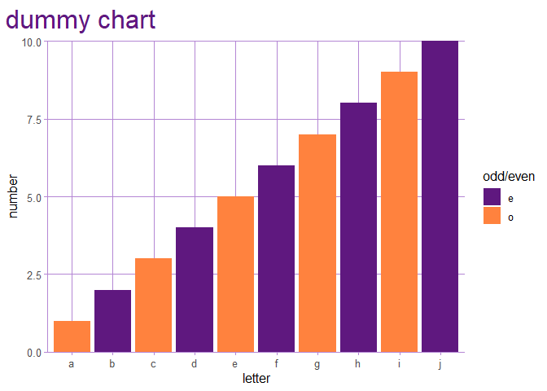

The goal of jodudr is to collect functions I’ve found useful for data analysis.
Options
jo_options()
This will set the options I use most often. Namely:
dplyr.width = Infpapersize = "a4"tab.width = 2width = 80max.print = 25stringsAsFactors = FALSElubridate.week.start = 6tibble.print_max = 25tibble.print_min = 25tibble.width = Infdplyr.summarise.inform = FALSEtidyverse.quiet = TRUE
Date functions
eom_date()
This determines the last day of month n months ago:
eom_date(ymd('2022-04-19'), 13)
#> [1] "2021-03-31"Used without parameters it will give the last day of the current month (run on 2024-02-16):
eom_date()
#> [1] "2024-02-29"
friday_wk()
Get last day of the week where week ends on Friday
d <- ymd('2024-02-06') # a tuesday
friday_wk(d)
#> [1] "2024-02-09"Theming
jo_pal_grad()
This will create a vector of n colours from my primary colour to my secondary colour.
jo_pal_grad(6) |>
show_col()
theme_jo()
Apply my theme to ggplot2 charts.
ggplot(mapping = aes(x = letters[1:10], y = 1:10, fill = rep(c('o', 'e'), times = 5))) +
geom_col() +
labs(x = 'letter', y = 'number', fill = 'odd/even', title = 'dummy chart') +
scale_y_continuous(expand = expansion(c(0, NA))) +
scale_fill_manual(values = c(jo_pal$primary, jo_pal$secondary)) +
theme_jo()
Analysis helpers
summaryx()
as_tibble(mtcars) |>
summaryx(mpg) |>
glimpse()
#> Rows: 1
#> Columns: 21
#> $ min <dbl> 10.4
#> $ p1 <dbl> 10.4
#> $ p5 <dbl> 11.995
#> $ p10 <dbl> 14.34
#> $ p25 <dbl> 15.425
#> $ median <dbl> 19.2
#> $ p75 <dbl> 22.8
#> $ p90 <dbl> 30.09
#> $ p95 <dbl> 31.3
#> $ p99 <dbl> 33.435
#> $ max <dbl> 33.9
#> $ n_obs <int> 32
#> $ sum <dbl> 642.9
#> $ mean <dbl> 20.09062
#> $ sd <dbl> 6.026948
#> $ lci_95 <dbl> 8.278024
#> $ uci_95 <dbl> 31.90323
#> $ n_miss <int> 0
#> $ n_zero <int> 0
#> $ pct_miss <dbl> 0
#> $ pct_zero <dbl> 0Will also work with grouping applied.